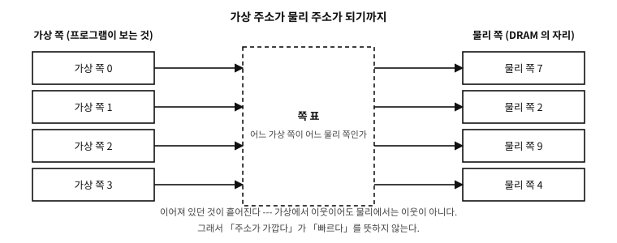

12 기억의 분화 — 레지스터, 캐시, 다층의 사다리
먼저 알아야 할 것
돌아보기
2장에서 “CPU가 메모리에서 다음 할 일을 가져와 그대로 한다”고 했다. 그러면 계산 자체도 메모리 위에서 하는가 — 100번 칸과 104번 칸을 더한 결과가 바로 108번 칸으로 가는가?
답. 아니다 — 그리고 이 질문이 이 장의 문을 연다. CPU는 메모리 위에서 직접 계산하지 않는다. 계산은 CPU 안의 별도 공간에서 일어난다. 2장의 그림에는 그 공간이 아예 그려져 있지 않았다. 이제 정직해질 시간이다.
이 장의 필요성과 맥락
이 장이 끝나면
이 장에서 답할 질문
- 그렇게 중요한 것이 왜 겨우 수십 개뿐인가? 잔뜩 만들면 안 되나?
- 프로그래머가 캐시를 직접 조종할 수는 없는가 — “이건 L1에 넣어 둬” 같은 지시는?
- 그러면 45장에서 볼 “주소 지도”의 그 넓은 간격은 낭비가 아닌가?
12.1 고백 — 그 그림은 과하게 단순했다#
2장의 CPU·메모리·클록 모델은 배움의 첫 계단으로는 훌륭하지만, 오늘의 컴퓨터를 놓고 보면 과하게 간소화된 그림이다. 어느 정도인가 하면 — 그 그림대로라면 오늘의 CPU는 시간 대부분을 멍하니 기다리며 보내야 한다. 클록은 반세기 동안 수십만 배 빨라졌는데 메모리는 그만큼 빨라지지 못했기 때문이다. 그런데 실제 컴퓨터는 멍하니 있지 않다. 그 사이에 무슨 장치가 들어섰는지가 이 장과 다음 장의 이야기다. 먼저, 처음부터 그림에서 빠져 있던 것부터 채워 넣는다.
12.2 레지스터 — 원래부터 있던, CPU의 손안#
CPU 안에는 레지스터(register)라는 작은 기억 장소들이 있다. 처음부터 있었다 — 2장의 그림이 생략했을 뿐이다. 개수는 겨우 수십 개, 크기는 워드 하나씩(3장). 대신 속도는 즉시다. 클록 박자 안에서 바로 읽고 쓴다. 손안에 쥔 동전이라 해도 좋다 — 주머니(메모리)보다 가깝고, 꺼내는 데 시간이 걸리지 않는다.
중요한 것은 이것이다. 모든 계산은 레지스터 위에서 일어난다. 두 수를 더하려면 먼저 메모리에서 레지스터로 가져오고(load), 레지스터끼리 더하고, 결과를 메모리로 되돌린다(store). “100번 칸 + 104번 칸”처럼 보이는 계산의 실제 동선은 언제나 [메모리 → 레지스터 → 계산 → 메모리]다.
문. 그렇게 중요한 것이 왜 겨우 수십 개뿐인가? 잔뜩 만들면 안 되나?
답. 빠름과 많음은 맞바꿈 관계이기 때문이다. 레지스터가 즉시인 이유는 CPU의 계산 회로 바로 곁에, 가장 비싼 방식으로 만들어져 있어서다. 수를 늘리면 거리가 멀어지고 고르는 시간이 붙어서 “즉시”가 무너진다. 그래서 설계는 “아주 빠른 것을 조금”으로 귀결됐고 — 이 맞바꿈이 이 장 전체를 지배하는 원리다: 빠른 기억일수록 작고, 큰 기억일수록 느리다.
C의 표면에도 이 지층의 흔적이 있다. C에는 register라는 키워드가 있는데 — “이 변수를 되도록 레지스터에 두라”는 옛 시절의 부탁이다. 오늘날에는 컴파일러가 사람보다 배치를 훨씬 잘해서 이 부탁은 장식이 됐지만, 변수를 누가 레지스터에 올리고 언제 메모리로 내리는가라는 문제 자체는 여전히 살아 있고, 14장(컴파일러 최적화(compiler optimization))의 핵심 소재가 된다.
12.3 벌어지는 격차 — 레지스터와 메모리 사이#
이제 두 기억을 나란히 세워 보면 그림이 선명해진다.
- 레지스터: 수십 개 × 워드 크기. 즉시.
- 메모리(DRAM — dynamic random-access memory, 흔히 「램」이라 부르는 그것): 수백억 칸. 오늘의 CPU 기준으로 수백 클록 박자를 기다려야 답이 온다.
처음부터 이랬던 것은 아니다. C가 태어난 시절(2장)에는 CPU와 메모리의 걸음이 얼추 맞았다. 그런데 이후 수십 년, CPU의 클록은 폭주하듯 빨라졌고 메모리는 커지는 쪽으로 진화하느라 속도가 그만큼 따라오지 못했다. 격차는 해마다 벌어져 수백 배가 됐다 — 손안의 동전과, 왕복 한 시간짜리 창고의 관계가 된 것이다. 계산은 즉시인데 재료 조달이 수백 박자라면, 기계는 일하는 시간보다 기다리는 시간이 길어진다.
흔한 오해. “메모리 접근은 어디를 읽든 같은 비용이다”
12.4 캐시 — 격차의 틈에 끼어든 중간층#
수백 배 격차의 해법으로 공학이 내놓은 것이 캐시(cache)다. 착상은 도서관에서 일하는 사람의 요령 그대로다. 서고(메모리)까지 왕복이 느리다면 — 방금 가져온 책을 책상 위에 얼마간 두라. 다시 찾을 때 책상에 있으면(적중) 즉시고, 없으면(미스) 그때만 서고에 다녀온다.
이것이 통하는 이유는 프로그램의 버릇 때문이다. 프로그램은 메모리를 아무 데나 무작위로 만지지 않는다 — 방금 만진 곳을 곧 다시 만지고 (시간 지역성, temporal locality), 만진 곳의 이웃을 이어서 만진다(공간 지역성, spatial locality). 루프가 같은 변수를 반복해 만지고, 배열을 앞에서부터 차례로 훑는 것을 떠올리면 된다. 이 버릇 덕에, 작은 책상 하나로도 서고 왕복의 대부분을 없앨 수 있다.
공간 지역성을 살리는 요령이 하나 더 있다. 캐시는 메모리에서 물건을 한 칸씩 가져오지 않는다. 요청한 칸의 이웃까지 묶어 — 오늘날 대개 64바이트, 사물함 예순네 칸을 상자째 — 한 번에 나른다. 이 운반 단위가 캐시 라인(cache line)이다. 배열을 차례로 훑을 때 첫 칸에서 한 번만 서고에 다녀오면 다음 예순세 칸이 공짜인 이유이고, 거꾸로 멀리멀리 건너뛰며 만지는 프로그램은 상자를 매번 새로 나르느라 느려지는 이유다. 이 “상자” 개념은 다음 장에서 뜻밖의 사고(false sharing)의 주인공으로 다시 나온다.
12.5 캐시의 분화 — 다층의 사다리#
캐시에도 레지스터와 같은 맞바꿈이 적용된다 — 빠르려면 작아야 하고, 크려면 느려진다. 그래서 캐시는 하나가 아니라 층으로 분화했다. CPU 바로 곁의 작고 가장 빠른 L1, 그 뒤의 중간 L2, 여러 코어가 함께 쓰는 크고 상대적으로 느린 L3 — 그리고 그 너머의 메모리. 대략의 감각만 숫자로 적으면 이렇다(기계마다 다르다).
| 층 | 크기의 규모 | 대략의 대기 | 비유 |
|---|---|---|---|
| 레지스터 | 수십 개 | 0 (즉시) | 손안의 동전 |
| L1 캐시 | 수십 KiB | 박자 몇 개 | 책상 위 |
| L2 캐시 | 수백 KiB–MiB | 십수 박자 | 책장 |
| L3 캐시 | 수–수십 MiB | 수십 박자 | 같은 층 서가 |
| 메모리(DRAM) | 수십 GiB | 수백 박자 | 창고 |
표 12.1 — 기억의 사다리 — 층별 크기와 대기 시간
읽는 법은 하나다 — 아래로 한 층 내려갈 때마다 크게 느려진다. 기억은 “한 덩어리”가 아니라 이 사다리 전체이고, 프로그램의 속도는 상당 부분 “필요한 것이 사다리의 몇 층에서 발견되는가”로 정해진다.
실제 사례. 같은 일, 다섯 배의 시간 — 2차원 표 훑기
문. 프로그래머가 캐시를 직접 조종할 수는 없는가 — “이건 L1에 넣어 둬” 같은 지시는?
답. 일반적으로는 없다. 캐시는 하드웨어가 자동으로 운용하고, C 언어에도 캐시를 직접 만지는 표준 문법은 없다. 프로그래머가 하는 일은 조종이 아니라 협조다 — 데이터를 이웃끼리 모아 두고, 만질 때 순서대로 만지는 것. 기억이 사다리임을 아는 사람의 코드는 자연스럽게 그렇게 생긴다. 그것으로 충분히, 방금 본 몇 배의 차이가 난다.
12.6 재어 보기 — 같은 개수, 다른 순서#
캐시가 있다는 말은 여기까지 그림이었다. 이제 기계에게 직접 물어본다.
실험은 단순하다. 읽는 개수를 똑같이 맞추고, 읽는 순서만 바꾼다. 한쪽은 배열을 앞에서 뒤로 차례대로 읽고, 다른 쪽은 흩어진 자리를 무작위 고리를 따라 읽는다. 명령의 개수도, 읽는 값의 개수도 같다.
examples/ch12/order.c
/* 같은 개수를 읽는데 순서만 다르다 --- 그 차이를 기계에게 물어본다.
★ 이 예제는 시간을 잰다. 그래서 나오는 수는 기계마다, 회차마다 다르다.
절대 시간은 찍지 않고 *배수*만 낸다. 결론(순서가 크게 다르다)만 남기면 된다. */
#include <stdio.h>
#include <stdlib.h>
#include <stdint.h>
#include <time.h>
#define N (4u << 20) /* 원소 400만 개 = 16 MiB --- 캐시보다 크게 */
#define TOUCH 1500000 /* 두 방식 모두 정확히 이만큼 읽는다 */
#define ROUNDS 3
static uint32_t *next_index; /* 무작위 순회를 위한 고리 */
static uint32_t *data;
static volatile uint64_t sink;
static uint64_t rng = 0x2545F4914F6CDD1DULL;
static uint32_t rnd(void)
{ rng ^= rng << 13; rng ^= rng >> 7; rng ^= rng << 17; return (uint32_t)(rng >> 32); }
static double order_in_order(void) /* 차례대로 읽는다 */
{
clock_t t0 = clock();
uint64_t acc = 0;
for (uint32_t i = 0; i < TOUCH; i++) acc += data[i % N];
clock_t t1 = clock();
sink = acc;
return (double)(t1 - t0);
}
static double order_scattered(void) /* 흩어진 자리를 읽는다(같은 횟수) */
{
clock_t t0 = clock();
uint64_t acc = 0;
uint32_t p = 0;
for (uint32_t i = 0; i < TOUCH; i++) { acc += data[p]; p = next_index[p]; }
clock_t t1 = clock();
sink = acc;
return (double)(t1 - t0);
}
static int cmp(const void *a, const void *b)
{ double x = *(const double *)a, y = *(const double *)b; return (x > y) - (x < y); }
int main(void)
{
data = malloc((size_t)N * sizeof *data);
next_index = malloc((size_t)N * sizeof *next_index);
if (!data || !next_index) { puts("out of memory"); return 1; }
for (uint32_t i = 0; i < N; i++) { data[i] = i; next_index[i] = i; }
/* 배열 전체를 도는 고리 하나를 만든다 --- 기계가 다음 자리를 짐작하지 못하게 */
for (uint32_t i = N - 1; i > 0; i--) {
uint32_t j = rnd() % i;
uint32_t t = next_index[i]; next_index[i] = next_index[j]; next_index[j] = t;
}
double a[ROUNDS], b[ROUNDS];
order_in_order(); order_scattered(); /* 데우기 --- 첫 회는 버린다 */
for (int r = 0; r < ROUNDS; r++) { a[r] = order_in_order(); b[r] = order_scattered(); }
qsort(a, ROUNDS, sizeof *a, cmp);
qsort(b, ROUNDS, sizeof *b, cmp);
double in_order = a[ROUNDS / 2], scattered = b[ROUNDS / 2]; /* 중앙값 */
printf("reading %u values, %u times each\n\n", N, TOUCH);
puts("both loops read the same number of values;");
puts("only the order of the addresses differs.\n");
if (in_order > 0.0)
printf("scattered order took %.1f times as long as sequential order\n",
scattered / in_order);
else
puts("the clock is too coarse on this machine to tell them apart");
puts("\n(no absolute times are printed: they differ by machine and by run.");
puts(" what stays is the ratio, and the reason for it.)");
free(next_index); free(data);
return 0;
}
실행 결과
reading 4194304 values, 1500000 times each
both loops read the same number of values;
only the order of the addresses differs.
scattered order took 41.6 times as long as sequential order
(no absolute times are printed: they differ by machine and by run.
what stays is the ratio, and the reason for it.)
★ 이 시연은 이 책에서 처음으로 시간을 재는 예제다. 그래서 규율이 하나 붙는다 — 절대 시간은 찍지 않고 배수만 낸다. 기계가 바뀌면 나노초는 바뀌지만 「흩어져 읽으면 수십 배 느리다」는 관계는 남기 때문이다. 여러 회차를 돌려 가운데 값을 쓰는 것도 같은 이유다.
차이가 몇 배가 아니라 수십 배다. 읽는 개수가 같으니 명령의 수로는 설명되지 않고, 자료가 어디 있느냐로만 설명된다.
그러면 차례대로 읽는 쪽은 왜 그렇게 빠른가. 캐시는 한 번에 한 줄(대개 64바이트)을 실어 온다. 차례대로 읽으면 그 줄에 담긴 이웃을 곧이어 전부 쓰게 되니, 한 번의 값으로 여러 번의 읽기를 해결하는 셈이다. 게다가 기계는 주소가 규칙적으로 늘어나는 것을 보고 다음 줄을 미리 가져다 놓는다. 흩어진 접근에는 그 둘 다 듣지 않는다.
흔한 오해. 자료가 캐시에 들어가면 빠르고, 넘치면 느리다
12.7 또 하나의 사다리 — 가상기억#
지금까지의 사다리는 빠르기의 사다리였다. 그런데 프로그램과 DRAM 사이에는 층이 하나 더 있다. 이 층이 하는 일은 속도가 아니라 번호를 바꿔치기하는 것이다.
3장에서 “이 번호는 진짜 주소인가”라고 물었던 자리로 돌아왔다. 오늘의 프로그램이 다루는 주소는 가상 주소이고, 그것을 실제 DRAM 의 물리 주소로 바꾸는 장치가 CPU 안의 MMU(Memory Management Unit)다.
12.7.1 세그먼트에서 페이징으로#
초기의 해법은 세그먼트였다. 프로그램의 기억을 통째로 한 덩어리로 잡아 “시작 주소 + 길이”로 관리하는 방식이다. 간단하지만 문제가 있었다 — 크기가 제각각인 덩어리를 넣었다 뺐다 하면 사이사이에 못 쓰는 틈이 생긴다(외부 단편화). 8086 의 세그먼트:오프셋은 이 계보의 흔적이다.
오늘의 방식은 페이징이다. 기억을 같은 크기의 조각으로 자른다 — 보통 4 KiB 이고, 이 조각을 쪽(page)이라 부른다. 가상 주소 공간도 같은 크기로 자르고, 쪽 단위로 짝을 지어 준다. 크기가 모두 같으니 어느 빈자리에나 들어가 외부 단편화가 사라진다. 대신 쪽 표(page table)라는 대응표가 필요하다.

그림 12.1 — 가상 쪽이 쪽 표를 거쳐 물리 쪽에 짝지어진다. 이어져 있던 것이 흩어진다 — 이 그림이 나르는 사실은 그 하나다.
x86-64 는 이 표를 네 단계(요즘은 다섯 단계)로 쌓는다. 48비트 주소를 9비트씩 네 조각과 12비트 오프셋으로 쪼개, 표를 타고 내려가며 마지막에 물리 쪽 번호를 얻는 식이다. 한 번의 번역에 표를 네 번 읽어야 한다는 뜻이기도 하다.
12.7.2 TLB — 번역에도 캐시가 붙는다#
메모리를 한 번 읽으려고 표를 네 번 읽는다면 남는 것이 없다. 그래서 MMU 는 최근 번역 결과를 작은 캐시에 담아 둔다 — TLB(Translation Lookaside Buffer)다. 항목 수는 수십에서 수천 개 수준이고, 적중하면 번역이 사실상 공짜다.
여기서 앞 절의 이야기와 만난다. 지역성은 캐시에만 좋은 것이 아니라 번역에도 좋다. 한 쪽(4 KiB) 안에서 일하는 동안에는 TLB 항목 하나로 충분하지만, 넓게 흩어진 주소를 뛰어다니면 TLB 미스가 나고 그때마다 표를 걷는 비용이 붙는다. 큰 자료를 다루는 프로그램이 거대 쪽(huge page, 2 MiB·1 GiB)을 쓰는 이유가 이것이다 — 같은 양을 훨씬 적은 항목으로 덮는다.
12.7.3 쪽 부재, 그리고 게으른 기억#
쪽 표에는 “이 쪽은 지금 물리 기억에 없다”는 표시를 할 수 있다. 그런 쪽을 건드리면 CPU 가 쪽 부재(page fault)를 일으켜 운영체제에게 넘긴다. 운영체제는 필요한 내용을 채워 넣고 다시 실행시킨다. 이 장치 하나로 여러 가지가 가능해진다.
- 요구 쪽매김. 실행 파일을 통째로 읽지 않고, 실제로 실행되는 쪽만 그때그때 읽어 온다. 프로그램이 빨리 시작하는 이유다.
- 스왑. 오래 안 쓴 쪽을 디스크로 내보내고 나중에 다시 데려온다.
- 기록 시 복사(copy-on-write).
fork가 기억을 통째로 복사하지 않고 쪽 표만 복사한 뒤, 누군가 쓰려 할 때에야 그 쪽을 진짜로 복사한다. - 게으른 할당.
malloc이 큰 덩어리를 줘도 물리 기억은 아직 붙지 않는다. 처음 만지는 순간 쪽 부재가 나고 그때 붙는다(46장에서 다시 만난다).
12.7.4 보호 — 왜 널 참조는 대개 즉시 죽는가#
쪽마다 권한 비트가 있다 — 읽기, 쓰기, 실행. 이것으로 세 가지가 이루어진다.
- 프로그램끼리 서로의 기억을 못 건드린다(10장의 격리가 여기서 구현된다).
- 코드 영역은 읽기·실행만, 데이터 영역은 읽기·쓰기만 — 데이터를 코드로 실행하는 공격을 막는다(W^X).
- 0번지 부근의 쪽은 아예 대응시키지 않는다. 그래서 널 포인터를 따라가면 하드웨어가 그 자리에서 쪽 부재를 일으키고, 운영체제가 프로그램을 죽인다. 4장에서 “0번지는 비워 둔다”고 했던 관행의 실제 구현이 이것이다.
문. 그러면 45장에서 볼 “주소 지도”의 그 넓은 간격은 낭비가 아닌가?
답. 아니다 — 가상 주소 공간은 공짜에 가깝기 때문이다. 쪽 표에 대응이 없는 구간은 물리 기억을 한 바이트도 쓰지 않는다. 그래서 오늘의 프로그램은 스택과 힙을 서로 멀리 떨어뜨려 두고 마음껏 자라게 한다. 45장의 시연에서 스택과 힙 사이가 수 TiB 로 나오는 것은 그만큼의 기억을 쓴다는 뜻이 아니라, 번호만 그만큼 벌려 두었다는 뜻이다.
흔한 오해. “프로그램이 메모리를 많이 잡으면 그만큼 RAM 이 줄어든다”
malloc(1 GiB) 이 성공해도 RAM 사용량은 거의 그대로일 수 있고, 반대로 그 영역을 전부 훑으면 그때 RAM(random-access memory — 임의 접근 기억 장치, 흔히 말하는 「메모리」다)이 줄어든다. 리눅스의 top 에서 VIRT 와 RES 가 크게 다른 이유가 이것이다 — 앞은 예약한 번호, 뒤는 실제로 붙은 쪽이다.플랫폼 노트. 이 모든 것이 없는 세계
C 프로그래머가 이 층에서 얻어야 할 것은 세 문장이다. 번호는 번역된다. 번역에도 캐시가 있고 지역성이 이롭다. 그리고 이 모든 것은 구현의 사정이지 표준의 약속이 아니다 — 표준은 쪽도, 스왑도, 심지어 운영체제도 언급하지 않는다.
그림 수리의 전반부가 끝났다 — 기억은 하나가 아니라 레지스터에서 창고까지의 사다리다. 그러나 아직 절반이다. CPU는 기다림을 줄이는 것으로 만족하지 않고, 실행 자체를 겹치는 쪽으로도 진화했다 — 조립 라인처럼 명령들을 포개고, 갈림길을 미리 짐작하고, 끝내 일꾼(코어)의 수를 늘렸다. 그 이야기, 그리고 그 요동의 한복판에서 C가 처음으로 계약서(C89)를 쓰게 된 사연이 다음 장이다.